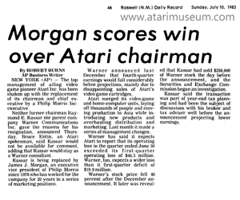
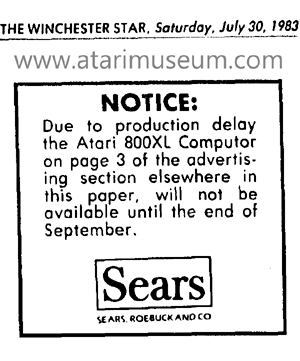

Kassar's
Autocratic management style of having to be central
to any and all decisions within Atari, coupled with
his lavish rewards to himself and his marketing and
sales managers while treating the engineering and
software employees as trivial and unimportant in his
view. He repeatedly issued
constant cancellations of new products &
technologies because they threatened sales of the
Atari 2600 VCS. This left Atari as a marketing
company without leading edge products to sell to
keep it ahead of an oncoming tsunami of competitors
with equal and/or better products. These actions had
destroyed the company from within.
As Kassar was fired and James
Morgan hired as his replacement, the beginnings of a
string of bad decisions coupled with poorly thought
out actions would again put Atari in a continued
direction towards its own undoing.

CLICK HERE for News Article (PDF)
James Morgan accepted the new
position, but the stipulation would be, he would not
start work at Atari for 2 months, leaving the
company without a CEO or direction. Steve Ross
would call Ray Kassar and ask him return for 2
months as a consultant. After expressing his
shock and insult that Ross would fire him and then
ask him to return, the two came to an agreement and
Ray Kassar would continue on - only as a figure
head, for 2 months to save public face for Warner
Communications and Atari. Meanwhile Atari is
facing production issues which result in a delay of
the release of the Atari 800XL's, this delay will be
further worsened once James Morgan arrives in
September.

CLICK HERE for News Article (PDF)
James Morgan, by not starting in
July to give himself the needed time to get up to
speed with the state of the company, its projects,
goals and deadlines would be the first in a series
of initial critical error's on James Morgan's part.
He could have spent July through August assuming
lead roles in critical project decisions and also,
during the more relaxed days of summer, enacted his
30 day review period instead of doing it when he
came on board in September.
For a consumer
electronics company, the months of September and
October are some of the most critical months to make
final preparations for manufacturing, shipping and
distribution of products for the all important
Christmas sales season where most companies can make
as much as 70% of their yearly revenue.
Instead James Morgan started his new position as CEO
in September. He then instituted a 30 day freeze on
all projects to evaluate the company. This was
the most serious tactical error on Morgan's part.
This would cripple the company's ability to function
and prepare things that needed to be readied.
What then followed were two of
the most serious error's James Morgan would make in
his entire time at Atari: The first: was his
choosing to delay manufacturing of the Atari
600/800XL computers for 30 days to have them built
in Atari's new plant instead of the existing one.
This new plant however, wasn't ready yet which was
the reason for the 30 day delay. This completely
destroyed any chance of Atari shipping product to
meet the 1983 Christmas retail season demand.
Atari would lose millions of dollars in badly needed
profit over this decision.
Even worse - Atari handed the
1983 Christmas sales season over to Commodore to
sell its products with practically no competition.
Atari desperately needed market share of its
computers out into the retailers for the 1983
Christmas season. This would further impact
Atari's post season sales because it would lose the
large amount of secondary purchases in January of
1984: Disk drives, printers, modems, software and
games.